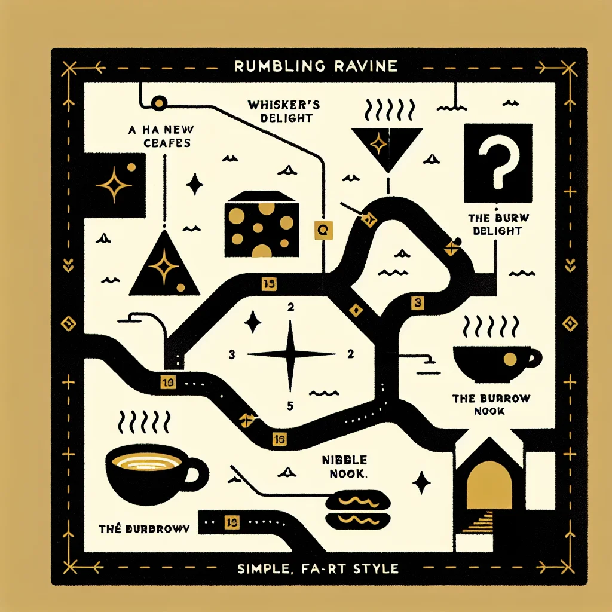

{kind=link}
{kind=link}
The Hidden Gems of Rumbling Ravine: A Guide to Ratopolis' Secret Cafés
Discover the enchanting hidden cafés of Rumbling Ravine in Ratopolis, where unique flavors and culinary creativity await adventurous food lovers.
4 minute read

Have you ever imagined discovering a place so enchanting it feels like a well-kept secret meant just for the curious and adventurous? Nestled in the scenic and slightly mysterious Rumbling Ravine, some of Ratopolis' best-kept culinary secrets are just waiting to be explored by eager taste buds and the city’s most intrepid food lovers.
Rumbling Ravine, with its winding paths and burrowing tunnels, has quietly become a haven for hidden cafés that each offer not just unique flavors, but an escape from the hustle and bustle of above-ground living. Stepping into this part of Ratopolis is like uncovering a secret map leading to treasure – in the form of delicious cheeses, teas, and innovative dishes that reflect a rich blend of tradition and modernity.
Rumbling Ravine's beauty is not just in its quaint, underground streets but in its history. Once merely a series of tunnels for storage and shelter, it gradually evolved into a culinary hub, attracting talented chefs driven by a passion for creativity and comfort.
One of the standout spots is Café Whisker’s Delight, famous for its artisanal cheese platters and cavernous charm. As you enter, the warm lighting and cozy nooks invite you to stay a little longer, savoring every bite of their exquisite dishes. Squeaky McCheddar, a local cheese enthusiast, couldn’t sing higher praises: "Whisker’s Delight has the best cheese fondue in all of Ratopolis! It's a hole-in-one for any cheese lover."
Not too far from Whisker's Delight, you'll find The Burrow Brew, a charming café known for its herbal teas and delicious rodent-friendly pastries. Here, the walls are adorned with intricate burrow art, providing a calming backdrop to your tea-sipping experience. "The Burrow Brew’s herbal teas are simply whisk-tastic!" says Nibbles Nutters, a frequent visitor. "They have a blend for every mood." Whether you fancy a refreshing mint tea or a soothing chamomile, The Burrow Brew effortlessly caters to each visitor's cravings.
For those seeking a delightful fusion of traditional rat cuisine with a modern twist, Nibble Nook is an essential visit. This quaint spot offers dishes that are both nostalgic and innovative. Cheddarina Whiskers, a local food blogger, loves this place: "Nibble Nook’s fusion dishes are a whisker above the rest. It’s my go-to spot for a unique dining experience." From their signature nut-stuffed pastries to their edgy carrot and cheese soufflé, every dish is a culinary adventure.
These cafés don't just provide food and drink; they foster an atmosphere that transforms meals into experiences. Whisker's Delight cloaks visitors in warmth with earthy décor and wooden tables carved into the walls. At Burrow Brew, the ambiance is serene, with soft music and cushioned seating. Meanwhile, Nibble Nook enchants with a touch of whimsy—hand-painted murals depicting Ratopolis' history and cozy cubbies that invite private dining.
Yet, the real charm of Rumbling Ravine's hidden cafés lies in the stories of their owners, who infuse their own flair into the ambiance and menu. Café Whisker’s Delight, for instance, started as a dream for owner Cheddarina Brie, who wanted to create a space where rats could enjoy gourmet cheese. "It wasn't easy turning a humble vision into a reality," she says. "But seeing our patrons' whiskers twitch in delight makes every struggle worth it."
Despite their hidden locations, these cafés face challenges, notably attracting and retaining patrons. "We rely heavily on word-of-mouth," explains Burrow Brew's owner, Earl Grey. He notes that the underground location, while charming, can be a barrier for first-time visitors. "Once they find us, though, they're hooked."
Indeed, these cafés’ uniqueness is their draw, standing apart from the larger, more well-known establishments above ground. They are perfect examples of the extraordinary culinary delights that Ratopolis has to offer beyond its visible surface. The essence of these establishments reflects a deeper cultural blending, influenced by the diversity and rich history of Ratopolis’ residents.
For those willing to venture into the depths of Rumbling Ravine, the rewards are plenty. The smaller foot traffic not only guarantees a more intimate experience, but it also gives patrons the chance to interact closely with the café owners and learn about their culinary passions firsthand.
If you haven't visited yet, now is the perfect time. These hidden gems beckon you to step away from the ordinary and embark on a flavorful journey that promises to leave a lasting impression. Whether it's for a quick caffeine fix or a decadent cheese experience, let Rumbling Ravine surprise you.
So, fellow food enthusiasts and curious nibblers, the next time you’re looking for an adventure and a delightful meal, head down to Rumbling Ravine. Let's celebrate and support these hidden gems that make Ratopolis so rich in flavor and culture. Have you discovered a hidden café we haven’t mentioned yet? Share your experiences and help us uncover even more hidden treasures beneath the city streets.
Looking for more in-depth news and exclusive content? Follow RAT TV for real-time updates, behind-the-scenes insights and the latest breaking news.
Rumbling Ravine, with its winding paths and burrowing tunnels, has quietly become a haven for hidden cafés that each offer not just unique flavors, but an escape from the hustle and bustle of above-ground living. Stepping into this part of Ratopolis is like uncovering a secret map leading to treasure – in the form of delicious cheeses, teas, and innovative dishes that reflect a rich blend of tradition and modernity.
Rumbling Ravine's beauty is not just in its quaint, underground streets but in its history. Once merely a series of tunnels for storage and shelter, it gradually evolved into a culinary hub, attracting talented chefs driven by a passion for creativity and comfort.
One of the standout spots is Café Whisker’s Delight, famous for its artisanal cheese platters and cavernous charm. As you enter, the warm lighting and cozy nooks invite you to stay a little longer, savoring every bite of their exquisite dishes. Squeaky McCheddar, a local cheese enthusiast, couldn’t sing higher praises: "Whisker’s Delight has the best cheese fondue in all of Ratopolis! It's a hole-in-one for any cheese lover."
Not too far from Whisker's Delight, you'll find The Burrow Brew, a charming café known for its herbal teas and delicious rodent-friendly pastries. Here, the walls are adorned with intricate burrow art, providing a calming backdrop to your tea-sipping experience. "The Burrow Brew’s herbal teas are simply whisk-tastic!" says Nibbles Nutters, a frequent visitor. "They have a blend for every mood." Whether you fancy a refreshing mint tea or a soothing chamomile, The Burrow Brew effortlessly caters to each visitor's cravings.
For those seeking a delightful fusion of traditional rat cuisine with a modern twist, Nibble Nook is an essential visit. This quaint spot offers dishes that are both nostalgic and innovative. Cheddarina Whiskers, a local food blogger, loves this place: "Nibble Nook’s fusion dishes are a whisker above the rest. It’s my go-to spot for a unique dining experience." From their signature nut-stuffed pastries to their edgy carrot and cheese soufflé, every dish is a culinary adventure.
These cafés don't just provide food and drink; they foster an atmosphere that transforms meals into experiences. Whisker's Delight cloaks visitors in warmth with earthy décor and wooden tables carved into the walls. At Burrow Brew, the ambiance is serene, with soft music and cushioned seating. Meanwhile, Nibble Nook enchants with a touch of whimsy—hand-painted murals depicting Ratopolis' history and cozy cubbies that invite private dining.
Yet, the real charm of Rumbling Ravine's hidden cafés lies in the stories of their owners, who infuse their own flair into the ambiance and menu. Café Whisker’s Delight, for instance, started as a dream for owner Cheddarina Brie, who wanted to create a space where rats could enjoy gourmet cheese. "It wasn't easy turning a humble vision into a reality," she says. "But seeing our patrons' whiskers twitch in delight makes every struggle worth it."
Despite their hidden locations, these cafés face challenges, notably attracting and retaining patrons. "We rely heavily on word-of-mouth," explains Burrow Brew's owner, Earl Grey. He notes that the underground location, while charming, can be a barrier for first-time visitors. "Once they find us, though, they're hooked."
Indeed, these cafés’ uniqueness is their draw, standing apart from the larger, more well-known establishments above ground. They are perfect examples of the extraordinary culinary delights that Ratopolis has to offer beyond its visible surface. The essence of these establishments reflects a deeper cultural blending, influenced by the diversity and rich history of Ratopolis’ residents.
For those willing to venture into the depths of Rumbling Ravine, the rewards are plenty. The smaller foot traffic not only guarantees a more intimate experience, but it also gives patrons the chance to interact closely with the café owners and learn about their culinary passions firsthand.
If you haven't visited yet, now is the perfect time. These hidden gems beckon you to step away from the ordinary and embark on a flavorful journey that promises to leave a lasting impression. Whether it's for a quick caffeine fix or a decadent cheese experience, let Rumbling Ravine surprise you.
So, fellow food enthusiasts and curious nibblers, the next time you’re looking for an adventure and a delightful meal, head down to Rumbling Ravine. Let's celebrate and support these hidden gems that make Ratopolis so rich in flavor and culture. Have you discovered a hidden café we haven’t mentioned yet? Share your experiences and help us uncover even more hidden treasures beneath the city streets.
Looking for more in-depth news and exclusive content? Follow RAT TV for real-time updates, behind-the-scenes insights and the latest breaking news.
Comments